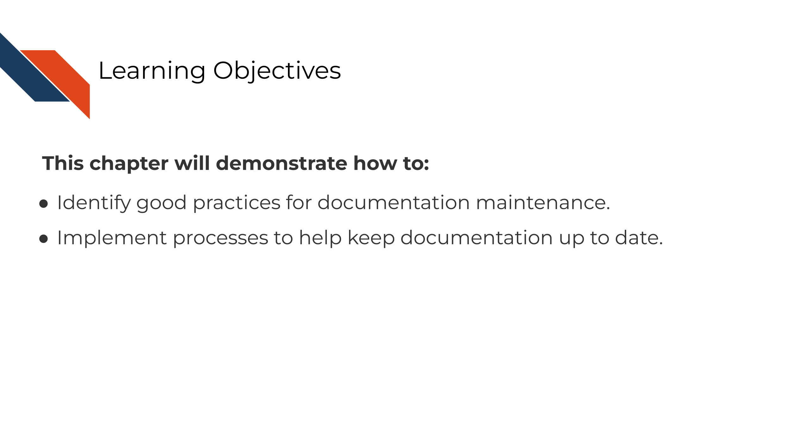

Chapter 12 Creating clear documentation
Our goal for documentation is to be as comprehensive, navigable, and as always, as clear as possible.
12.1 Characteristics of clear documentation
12.1.1 Is easy to find
No matter how well your documentation is crafted, it is of no use if no one can find them. Having documents that are standard and at the top of your directory is key. READMEs for example are standard documents in software that give the TL;DR of the project. In science, READMEs are incredibly valuable.
12.1.2 Is comprehensive
All items are covered in the documentation in an organized fashion – every. single. thing. This includes all:
- Data sources and versions
- Metadata
- Software dependencies and their versions
- Terms
- Functions
- Arguments
- Parameters
- Defaults
The most useful documentation…
- Not only define the items and files included, but tells how it relates to other items (and they have links where relevant).
- Make any existing defaults and calculations very clear. It doesn’t assume that just because a term is used, the calculation is obvious. For example, Tumor Mutation Burden is a common statistic to report but it is calculated different ways. Documentation should describe major calculations and not assume standardization.
- Shows how to re-run the entire analysis, example lines of code go a long way.
- Tries to avoid the use of jargon, but if it is absolutely necessary to use a jargon-y term it links to information about the meaning of the term.
12.1.3 Data formats are described
Perhaps after installation, getting data formatted correctly is one of the other very large hurdles users will need to deal with.
Ideally, your software can use a data format that is common. But the more that your tool is particular about an odd data format, the more your documentation needs to be specific about what the odd data format looks like. It’s very helpful to include subsetted, de-identified example files for a positive control/example.
12.2 Types of documentation you should have
Documentation strategies are not one size fits all but there are two types of documentation we strongly advise every project has: READMEs and analysis notebooks.
We refer you to see the OpenPBTA project as a real life example of well documented open source data analysis.
12.2.1 READMEs!
READMEs are also a great way to help your collaborators get quickly acquainted with the project.

READMEs stick out in a project and are generally universal signal for new people to the project to start by READing them. GitHub automatically will preview your file called “README.md” when someone comes to the main page of your repository which further encourages people looking at your project to read the information in your README.
Information that should be included in a README:
- General purpose of the project
- Instructions on how to re-run the project
- Lists of any software required by the project
- Input and output file descriptions.
- Descriptions of any additional tools included in the project?
You can take a look at this template README to get your started.
12.2.2 Exercise: Write a README for your project!
- Download this template README.
- Fill in the questions inside the
{ }to create a README for this project. - You can reference the “final” versions of the README, but keep in mind it will reference items that we will discuss in the “advanced” portion of this course. See the R README here and the Python README here.
- Add your README and updated notebook to your GitHub repository. Follow these instructions to add the latest version of your notebook to your GitHub repository. Later, we will practice and discuss how to more fully utilize the features of GitHub but for now, just drag and drop it as the instructions linked describe.
12.2.3 Notebook descriptions
The generous use and keeping of notebooks is a useful tool for documentation of the development of an analysis.
Data analyses can lead one on a winding trail of decisions and side investigations, but notebooks allow you to narrate your thought process as you travel along these analyses explorations!
Your scientific notebook should include descriptions that describe:
12.2.3.1 The purposes of the notebook
What scientific question are you trying to answer? Describe the dataset you are using to try to answer this and why does it help answer this question?
12.2.3.2 The rationales behind your decisions
Describe why a particular code chunk is doing a particular thing – the more odd the code looks, the greater need for you to describe why you are doing it.
Describe any particular filters or cutoffs you are using and how did you decide on those?
For data wrangling steps, why are you wrangling the data in such a way – is this because a certain package you are using requires it?
12.3 How to keep your documentation up to date

12.3.1 The goal of documentation maintenance
Perhaps you’ve been making improvements or otherwise updating your software tool. That’s excellent and you deserve a big kudos for continuing maintenance on your tool!
But your work is not done yet. For each (user-facing) update you make to the tool, you should also make a documentation update. As a user, the only thing worse than having a tool with no documentation at all is having a tool with documentation that is out of date or otherwise incorrect.

If documentation updates aren’t prioritized, your tool can easily get several versions ahead leaving the documentation you carefully crafted rather useless and misleading.
12.3.2 Keep your documentation in one, version-controlled place
Presumably you have some sort of process for version controlling your tool updates (we assume GitHub but could be other services). Ideally, your documentation should be version controlled similarly and, if appropriate, in the same place. The easier you make it on yourself to update your documentation, the more likely future you will be at updating it successfully! It’s worth spending time thinking about your own development process and how you can make it easier on yourself and your team for longer-term better maintained documentation.
12.3.3 Do not consider a tool fix done before its relevant documentation update is also completed
However you track your tasks, also track your documentation issues and always pair a software fix with a documentation fix – or at least check if it affects anything user-facing. To help you remind you of this, you may want to use an issue template (if you use GitHub) and make sure that issue template includes a reminder to update documentation.
12.3.4 Make sure links work
A very simple but all too common problem with out of date documentation is broken links!

You can catch these broken links by manually clicking on all your links, but sometimes broken links will still slip through the cracks anyway! There are GitHub actions and other automated tools that can check your URLs for you. Take advantage of automation to do this for you so you can save your time an effort for other improvements to your tool and documentation!
Here’s some options for automated URL-checking:
12.3.5 Set aside time to do maintenance
In an academic setting it can be hard to find time for things that don’t have urgent deadlines. But long term we know maintenance is best done little by little. In order to best maintain your work long term its best to set aside time on your calendar to actually do the maintenance. Otherwise it may never happen.
We encourage funding institutions to recognize that maintenance is the most frugal strategy. Whether it be for software or course or other products, maintenance should be prioritized for the long term benefit of the research community. More funding opportunities should be set aside for maintenance of current products as opposed to always creating new products that will also decay if not maintained.
12.4 Exercise 1: Add a reminder for documentation updates to your task manager
- If you use GitHub, add an issue template that has a reminder to update documentation.
- If you use something else for task management, look for some other way to remind yourself (and your fellow developers on the project) to keep documentation up-to-date for each change.
12.5 Exercise 2: Implement a URL checker
- If you use GitHub for your documentation, add a url checking GitHub action to your repository.
We used a url-checker GitHub action for developing this course!
You can see ours here for an example.
- If you use something else for version control, look into URL checkers that you can easily implement into your development process.